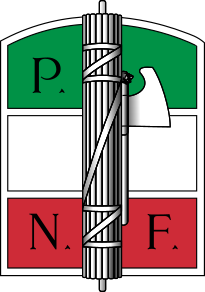
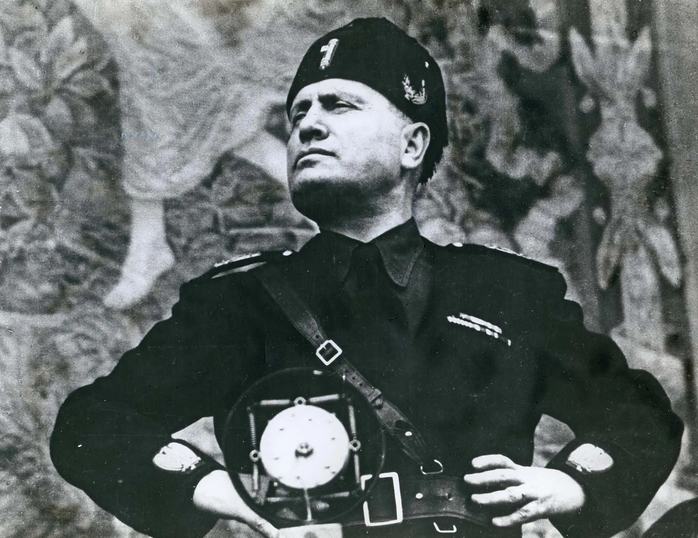

Il fascismo nacque in Italia dopo la Prima guerra mondiale, in un periodo di crisi economica, disoccupazione e forti tensioni sociali. In questo clima emerse Benito Mussolini, che nel 1919 fondò i Fasci di combattimento. Nel 1922, con la Marcia su Roma, i fascisti ottennero il potere e il re Vittorio Emanuele III affidò a Mussolini l’incarico di formare il governo.
Per rafforzare il proprio potere, nel 1923 il regime approvò la Legge Acerbo, una legge elettorale che assegnava la maggioranza dei seggi al partito che avesse ottenuto almeno il 25% dei voti. Grazie a questa legge, nelle elezioni del 1924 i fascisti conquistarono il controllo del Parlamento.
Nello stesso anno avvenne il delitto Matteotti: il deputato socialista Giacomo Matteotti denunciò in Parlamento le violenze e i brogli commessi dai fascisti durante le elezioni. Poco dopo venne rapito e ucciso da uomini legati al regime fascista. Questo episodio provocò grande indignazione, ma Mussolini riuscì comunque a mantenere il potere e trasformò progressivamente l’Italia in una dittatura, eliminando i partiti oppositori e limitando la libertà di stampa.

Negli anni Trenta il fascismo rafforzò la propaganda e il controllo sulla popolazione, esaltando il nazionalismo e la figura del Duce. Mussolini si avvicinò alla Germania di Adolf Hitler e introdusse anche le leggi razziali del 1938 contro gli ebrei.
Nel 1939 iniziò la Seconda guerra mondiale e l’Italia entrò in guerra nel 1940 a fianco della Germania. La guerra portò però fame, distruzione e numerose sconfitte militari. Nel 1943 Mussolini fu arrestato e il regime fascista crollò, ma i tedeschi occuparono il Nord Italia e nacque la Repubblica Sociale Italiana.
In quegli anni si sviluppò la Resistenza, composta da partigiani che combattevano contro nazisti e fascisti per liberare il paese. Nel 1945 il fascismo terminò definitivamente con la liberazione dell’Italia e la fine della guerra. Mussolini fu catturato e ucciso dai partigiani, mentre il paese iniziò un nuovo percorso democratico che porterà alla nascita della Repubblica Italiana.